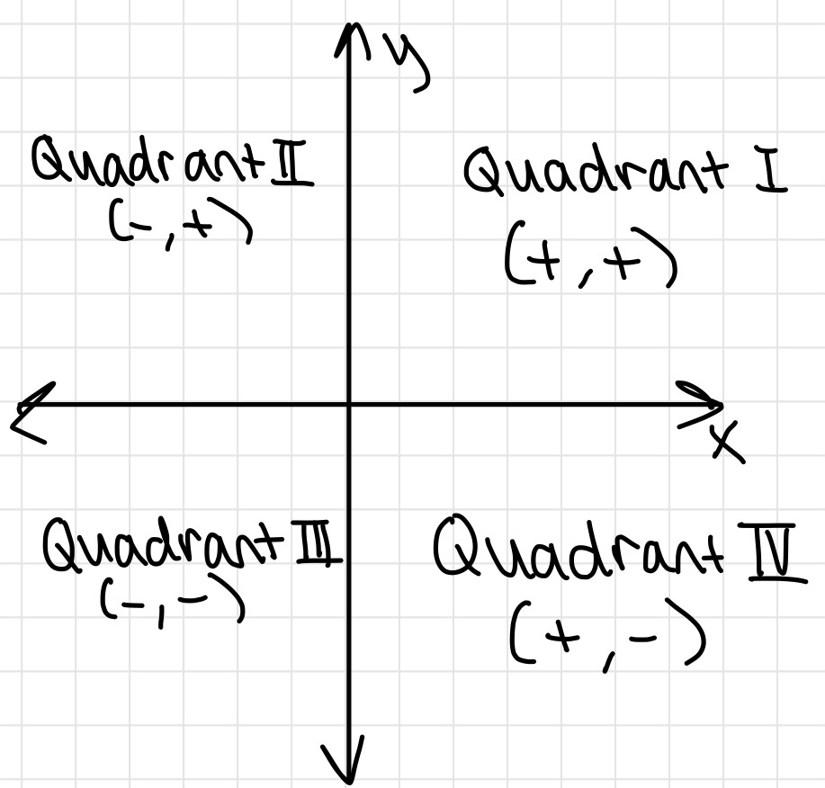
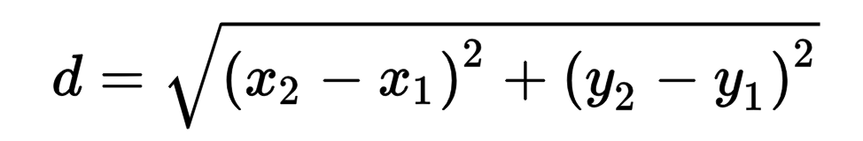
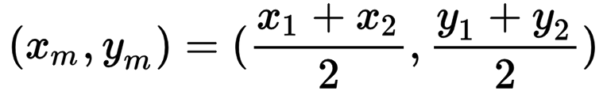
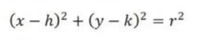

Precalculus!
Precalculus is not as scary as it may seem. Do not worry. We got you :D
Chapter 1
Coordinate Plane Quadrants

Distance Formula

- Finds the distance between two points on a coordinate plane
- The distance formula is also the pythagorean therom.
- The distance between two points is the hypotenuse of a right triangle.
Midpoint Formula

- Finds the middle point in between two points on a coordinate plane
- Dividing by two finds the center x and y point
Intercepts
x-intercepts: let y = 0 and solve for x
y-intercepts: let x = 0 and solve for y
PLEASE write intercepts in coordinate form! Ex. (0, 5)
Symmetry
x-axis Symmetry
- One half of the graph is the same as the other half
- Opens horizontally
- Even exponent on the y value
- Ex. x = y4 - 3
y-axis Symmetry
- One half of the graph is the same as the other half
- Opens vertically
- Even exponent on the x value
- Ex. y = x2 + 4
Origin Symmetry
- Replacing y with -y and x with -x creates the same equation
- Most likely has an odd exponent
- Ex. y = x5
Equation of a Circle

- Center = (h,k)
- Radius = r
- Find the midpoint of the circle using two points to find the center
- Distance from a point and the center is the radius
Slope
AKA average rate of change
- rise/run
- m = (y2 - y1)/(x2-x1)
Slope-Intercept Form
y = mx + b
- m = slope
- b = y-intercept
Point Slope Form
y - y1 = m(x - x1)
- The same as Slope-Intercept Form
- Use a point and the slope to find the slope-intercept form of the slope
Standard Form
ax + by = c
- Can convert into slope-intercept form
Parallel & Perpendicular Lines
Parallel lines
- Both slopes have the same slope (m)
- Ex. y = 2/3x + 1 and y = 2/3x + 4
Perpendicular lines
- Both slopes have an opposite value and reciprocal of each other
- Ex. y = 2/3x + 1 and y = -3/2x - 7
Interval Notation
(___, ____)
- The domain DOES NOT include the x values
- If the coordinate is part of a graph, leave a hole in the coordinate
[___, ____]
- The domain includes the x values
(___, ___] or [___, ____}
- The respective x values will be included/not included
Examples
- [-3, 3] is equivalent to -3 <= x <= 3
- (-4, 4] is equivalent to -4 < x <= 4 (does not include -4 in the domain)